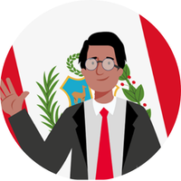
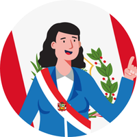

Segunda Vuelta
2026
Sistema de Escrutinio Digital para el procesamiento de 86,488 mesas de sufragio. Resultados en tiempo real con trazabilidad y transparencia total.
Elección de Fórmula Presidencial

Keiko Fujimori
Fuerza Popular

Roberto Sánchez
Juntos por el Perú
Registro de Acta Digital
Presidente: —
* La suma debe ser exactamente 300 votos (padrón de mesa).
Acceso Presidente de Mesa
Ingrese su DNI para validación con RENIEC:
DNIs de prueba:
12345678 — Mesa 000001
87654321 — Mesa 000002
11223344 — Mesa 000003
Conoce más sobre el proceso electoral 2026
Estar informados es fundamental para una democracia saludable. ¿Quieres conocer más sobre este proceso electoral y cómo funciona el sistema de escrutinio digital?
Saber másAlgunos puntos importantes sobre estas elecciones 2026
La Segunda Vuelta se realizará el Domingo 7 de junio de 2026 de 7 a. m. a 6 p. m. Más de 27 millones de peruanos elegirán al Presidente y Vicepresidentes de la República.
Candidatos: Keiko Fujimori (Fuerza Popular) y Roberto Sánchez (Juntos por el Perú).
¿Qué elegiremos en la Segunda Vuelta 2026?
Estas son las autoridades por las cuales votaremos el 7 de junio de 2026.


